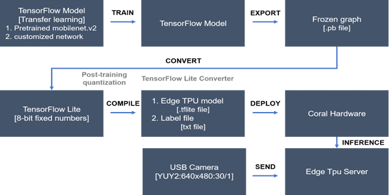

시각장애인을 위한 비상구 표지판 인식
실내 이미지에서 비상구 표지판을 구분하는 분류 모델을 만들고, 경량 실행을 위한 TensorFlow Lite 변환을 수행했습니다. 비상구 여부를 판단하는 모델과 표지판 유형까지 구분하는 모델을 나누어 실험했습니다.
- 모델: MobileNetV2의 비상구 여부·표지 유형 분류
- 구현: 전이학습 → TFLite 양자화 → Edge TPU 변환



문제와 맥락
비상구 표지판은 비상 상황에서 중요한 시각 정보지만 시각장애인이 직접 확인하기 어렵습니다. 프로젝트는 카메라 이미지에서 비상구 관련 정보를 인식하는 기술적 가능성을 살폈습니다.
공개 코드의 작업은 이미지 분류입니다. 이미지 안에서 표지판의 좌표를 찾아내는 객체 검출이나 실제 대피 경로 안내까지 구현한 것으로 설명하지 않습니다.
수행 역할
이새롬·이도현이 참여한 서울과학기술대학교 IoT 수업 팀 프로젝트입니다. 공개 저장소에는 데이터 준비, 모델 학습, 변환 실험이 남아 있습니다. 개인별 작업 분담은 별도로 명시되어 있지 않습니다.
접근 방법
데이터와 분류 과제
실내 표지판 데이터 ISD, 실내 물체 데이터 IODD와 직접 수집한 이미지를 사용했습니다. 비상구 / 기타의 이진 분류와 방향을 나타내는 표지 / 현재 위치의 비상구 표지 / 비상구가 아닌 이미지의 3개 클래스 분류를 따로 구성했습니다.
전이학습
이미지를 224×224 크기로 맞추고 픽셀 값을 정규화했습니다. ImageNet으로 사전 학습한 MobileNetV2의 가중치를 고정하고, 전역 평균 풀링과 분류층을 붙여 학습했습니다. 공개 기록에는 밝기 변화와 뒤집기 증강도 포함됩니다.
Adam과 범주형 교차 엔트로피를 사용하고 검증 손실에 따른 조기 종료를 적용했습니다. AUC와 클래스별 예측 양상을 함께 확인했습니다.
경량 실행을 위한 변환
Keras 모델을 대표 데이터로 정수 양자화한 TensorFlow Lite 모델로 변환하고 Edge TPU 컴파일을 시험했습니다. 학습 모델을 경량 실행 형식으로 옮기는 과정까지가 공개 구현의 범위입니다.
적용 범위
저장소는 검증 AUROC를 이진 분류 0.95, 다중 분류 0.9538로 보고합니다. 이 수치는 저장소의 실험 기록이며 실제 대피 환경의 신뢰도를 의미하지 않습니다.
천장·벽·창문 등 배경에 따른 오분류 사례도 기록되어 있습니다. 제한된 이미지와 검증 조건에서 얻은 결과이므로 조명, 촬영 거리, 표지판 크기가 달라지는 환경에 대한 추가 검증이 필요합니다. 실제 사용자 대상 안내 서비스나 안전 성능의 검증 결과는 공개 자료에서 확인되지 않습니다.